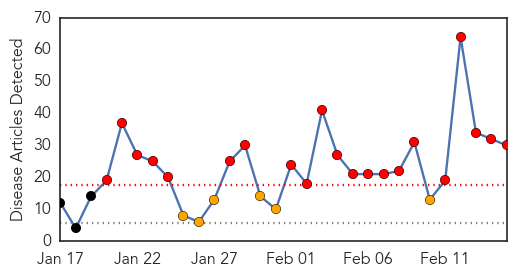
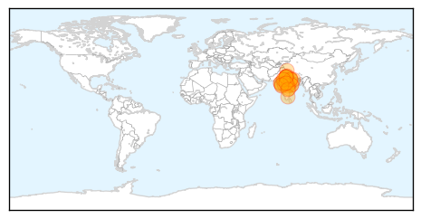
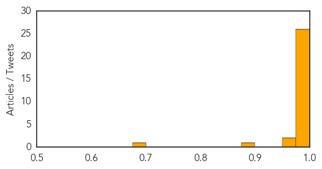

Swine Flu
30-Day Web Trend
21 alerts, 6 warnings

30-Day Twitter Trend
0 alerts, 0 warnings

Article Locations
Article Confidences
Top Articles:
- 1.000
- Spike in number of swine flu cases but health officials allay fears
- 1.000
- Swine flu in India: Situation worsening across the country, Govt. to take stringent measures
- 1.000
- Answers to your queries on swine flu
- 1.000
- Fear in the Air as Swine Flu Sinks its Fangs Deeper
- 0.999
- Swine flu in India: 2,167 positive cases, 153 deaths in Rajasthan
- 0.999
- 19 more suspected cases of swine flu in Chhattisgarh
- 0.998
- Six Sector 47 residents referred to GMSH-16 during survey
- 0.998
- Government to vaccinate health workers against swine flu
- 0.998
- Swine flu underreported in UP? State tally 105 cases against national figure Of 5,000
- 0.998
- Swine flu: Government ‘closely monitoring’ situation across India
- 0.997
- Government to vaccinate health workers against swine flu
- 0.997
- Doctors fear change in nature of swine flu virus
- 0.997
- Second swine flu death reported in U’khand
- 0.997
- Three more die of swine flu
- 0.996
- Fresh 19 samples sent for swine test from Chhattisgarh
- 0.996
- Government to vaccinate health workers against swine flu
- 0.995
- 11 more swine flu deaths in Rajasthan, toll 153
- 0.995
- With Only Two Centres to Detect Disease, Madhya Pradesh Grapples With Rising Cases of Swine Flu
- 0.993
- Swine flu claims 12 more lives, state toll touches 136
- 0.993
- Chaos at Civil, private hospitals close their doors
- 0.991
- Rise in swine flu cases in Lucknow, CM warns doctors
- 0.990
- Swine flu cases surface in Kashmir Valley
- 0.989
- Rise in swine flu cases in Lucknow, CM Akhilesh Yadav warns doctors
- 0.989
- H1N1 attacks Trichy doctor, recuperates
- 0.983
- Swine flu claims 12 more lives in Gujarat; toll 136
- 0.976
- Udupi reports nine H1N1 cases..., SahilOnline News
- 0.970
- Swine flu claims 6 lives
- 0.952
- Swine flu claims 8 more lives in Gujarat; toll rises to 144
- 0.884
- Swine Flu: Chhattisgarh schools on alert; railway station, bus stand vulnerable
- 0.677
- Rajasthan, Maha tourism face Rs 5,500 cr loss due to swine flu
Top Tweets:
-
No tweets found for Feb 15, 2015
Mumps
30-Day Web Trend
0 alerts, 0 warnings

30-Day Twitter Trend
0 alerts, 0 warnings

Article Locations

Article Confidences

Top Articles:
-
No articles found for Feb 15, 2015
Top Tweets:
-
No tweets found for Feb 15, 2015